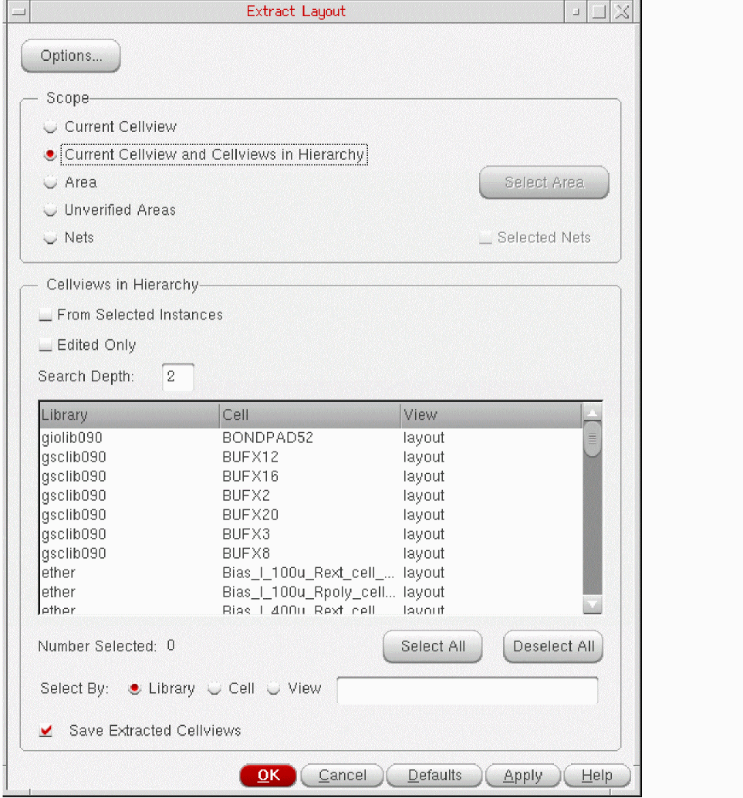
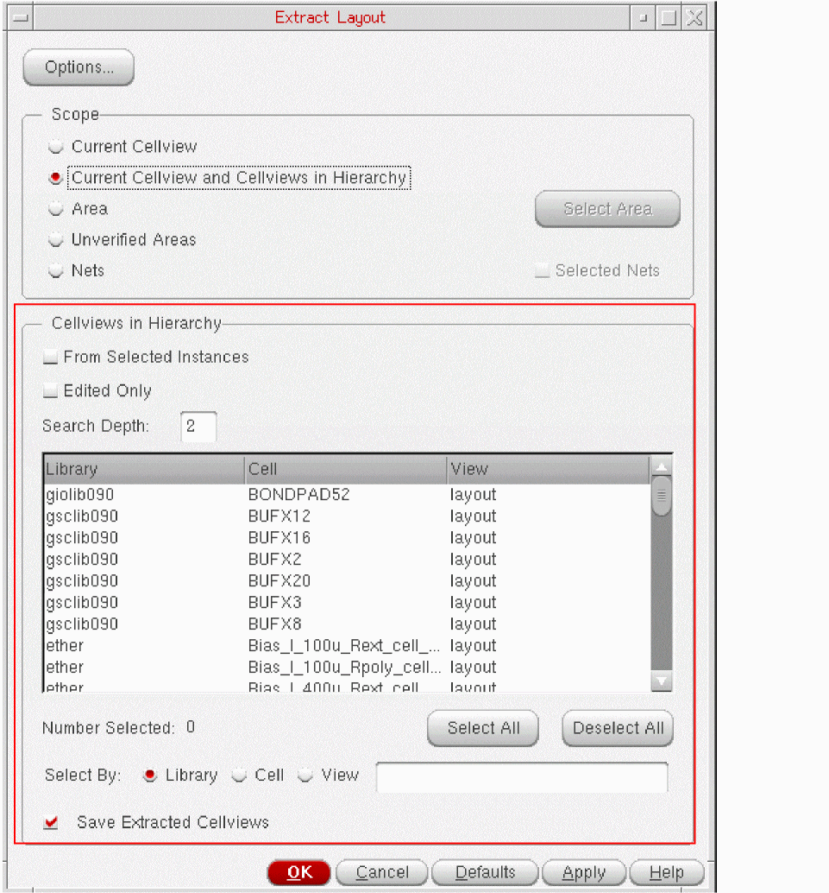

Extracting Hierarchical Cellviews
Hierarchical cellview extraction lets you extract either an entire hierarchical design or selected lower-level cellviews from the current top level of the design. The extraction is performed bottom-up, starting with the cellview lowest in the hierarchy and ending with the top-level cellview. This is why the extraction is also called bottom-up extraction.
If you manually disable the extractor while editing a lower-level cellview, the extractor will be automatically disabled for the entire hierarchy. To resume incremental extraction for the edited cellview, the extractor must be manually re-enabled when needed.
To perform bottom-up extraction:
-
From the CIW, open a layout cellview and choose Connectivity – Extract Layout.
The Extract Layout Form form is displayed.
 -
Set the Scope field to Current Cellview and Cellviews in Hierarchy, which means the extractor will extract connectivity from the current top-level cellview and the specified cellviews in the hierarchy.
The controls in the Cellviews in Hierarchy group box are enabled, as displayed in the figure below.
 - hierarchical cellviews are listed as extractable:
-
In the Cellviews in Hierarchy group box, specify how far down in the hierarchy to look for the cells to extract.
Depending on the specified search depth, if lower-level extractable cellviews are found, they are listed in the table. -
Choose the cellviews you want to re-extract from the list.
You can filter the list by library name, cell name, and view name or click Select All to select all the cellviews listed. Click Deselect All to deselect all the listed cellviews.
The filter mechanism has no wildcard capability. For example, to select a cell called ‘resistor’, you must type ‘r’, ‘re’, ‘res’, and so on. If you type ‘sis’, the cell is not selected. -
(Optional) To change the way the extraction is performed, click Options at the top of the form to open the Connectivity tab of the Connectivity form, where you can set the following extraction parameters for the design.
-
To increase or decrease the extractor’s visibility into the hierarchy of the design, change the value of the Extract connectivity to level option.
See Extracting a Top-Level Design. -
To change the list of extractable layers, choose a different constraint group from the Derive extractable layers from constraint group list.
See Prerequisites for Using the Layout XL Connectivity Extractor. - To show weak-connect and must-connect violations in the design, switch on the Verify weak-connect violations and Verify must-connect violations options.
-
To show the opens in the design, switch on the Verify open violations option.
To improve performance, you can limit the numbers of violations displayed by net and by cellview using the Maximum number of open violations by net and Maximum number of open violations by cellview options.
You can also include or exclude instance terminals with non-extractable pin shapes using the Verify unimplemented instance terminals option.
-
To increase or decrease the extractor’s visibility into the hierarchy of the design, change the value of the Extract connectivity to level option.
- Select Save Extracted Cellviews to automatically save each cellview after it has been extracted.
-
Click OK or Apply to extract the selected lower level cellviews.
The selected cellviews are extracted all the way up to the top level of the design.
Parameterized Cells
The connectivity extractor does not extract Pcell masters during
Related Topics
Extracting Hierarchical Cellviews
Return to top